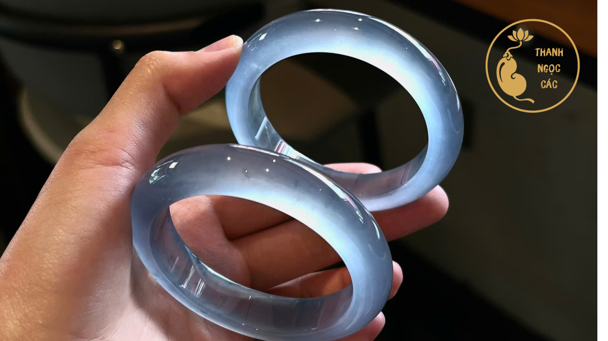
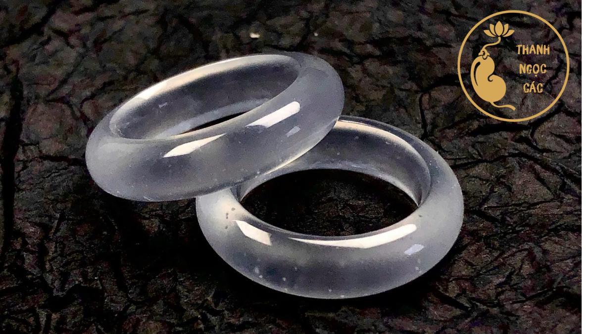
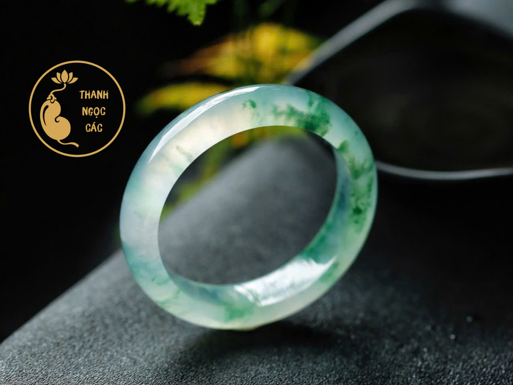

Vòng Tay

Bracelet sizer
Đo Size Vòng Tay
Đo chu vi cổ tay bằng dây mềm hoặc thước. Hệ thống sẽ trả ra vòng phù hợp.
Bắt đầu đo →Bộ ba công cụ đo size chuyên dụng
Được phát triển dựa trên 10,000+ khách hàng đã mua sắm tại Thanh Ngọc Các.
Cho từng món trang sức ngọc phỉ thúy
So sánh công cụ
Mỗi loại trang sức một phương pháp đo riêng
Ba công cụ được phát triển chuyên biệt cho từng dòng trang sức ngọc phỉ thúy.

Bracelet sizer
Đo chu vi cổ tay bằng dây mềm hoặc thước. Hệ thống sẽ trả ra vòng phù hợp.
Bắt đầu đo →Bead calculator
Nhập kích thước cổ tay và đường kính hạt, công cụ tính chính xác số hạt.
Bắt đầu tính →
Ring sizer
Ba phương pháp đo chính xác: đo trực tiếp, đo vòng cũ hoặc quy đổi size.
Bắt đầu đo →
Phỉ thúy chính phẩmTại sao quan trọng
Đo đúng — khác biệt lớn
Vòng quá rộng hoặc quá chật đều có thể ảnh hưởng trải nghiệm đeo.
Trang sức ngọc tự nhiên cần vừa vặn để giữ được sự thanh lịch.
Đo chuẩn ngay từ đầu giúp tiết kiệm thời gian và giữ trải nghiệm mua hàng.
"Một chiếc vòng ngọc phỉ thủy vừa vặn không chỉ là trang sức — đó là người bạn đồng hành suốt một đời người."
Quy trình đơn giản
Ba bước đến size hoàn hảo
Bước I
Vòng tay, chuỗi hạt hay nhẫn — chọn công cụ phù hợp.
Bước II
Theo hướng dẫn từng bước, đo và nhập số liệu của bạn.
Bước III
Xem size phù hợp và khám phá sản phẩm vừa với bạn.
Câu hỏi thường gặp
Giải đáp không chắc size của bạn?
Nếu đo đúng theo hướng dẫn, độ chênh lệch thường chỉ khoảng 0.2–0.5mm.
Không. Mỗi loại trang sức cần phương pháp đo riêng.
Bạn nên chọn theo cảm giác đeo mong muốn và tư vấn thêm với Thanh Ngọc Các.
Khởi hành bắt đầu
Chọn công cụ phía trên hoặc liên hệ Zalo để được tư vấn trực tiếp bởi Thanh Ngọc Các.